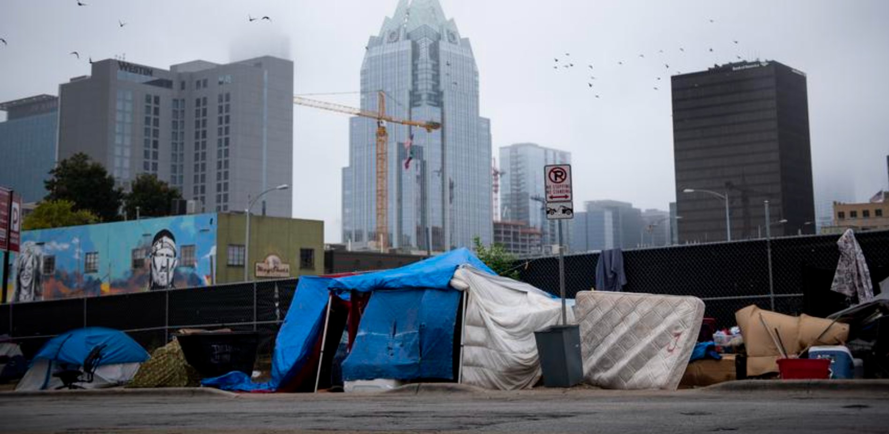

Being homeless is more common than you think. It can happen to anyone around us including family, veterans, and foster care participants. Homelessness can be caused by:
- War
- Poverty/lack of affordable housing
- Domestic violence
- Mental illness
- Young people aging out of foster care
- Racial Inequality
- Eviction
This causes more people to be on the streets and increases the danger in the environment. Learning about homelessness is important because it helps us be more aware of what is happening around us and educate on how to help.
Visit these websites to learn more:
-End Homelessness
-NFYI
-Washington EDU